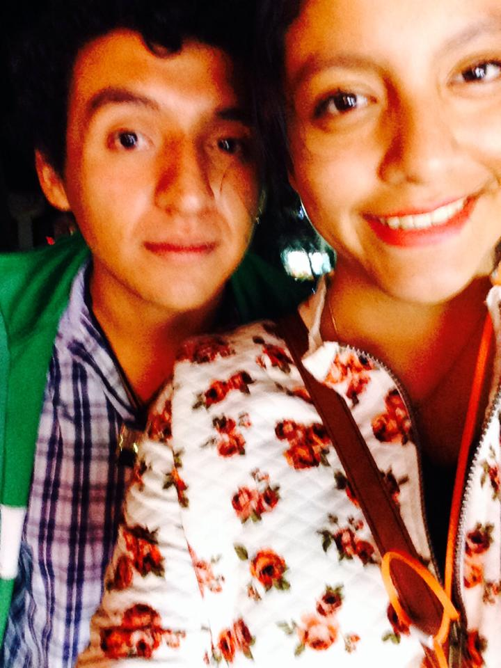

Villa Iluminada
Resumen
La “Villa Iluminada” es un recorrido que resalta la belleza arquitectónica de esta ciudad, embelleciéndola con luz.
Durante más de cuarenta días las calles formarán un circuito de luz y color, vestidas de figuras y escenas alusivas a la navidad, las tradiciones y la identidad de la ciudad.
Los edificios antiguos serán engalanados con luces, lo que destacará su bella arquitectura y valor histórico.
Además, no te pierdas actividades:
- Artísticas
- Culturales
- Deportivas
- Stands de Flores
- Artesanías
- Artículos navideños y de temporada
- Gastronomía típica
El recorrido del espectáculo iniciará en la Calle Hidalgo, bajando hacia el zócalo de Atlixco, pasa por el callejón Constitución y sigue por la calle 4 norte, frente al exconvento de El Carmen, llegará a calle Nicolás Bravo, después al boulevar Ferrocarriles y finalizará en el Parque Revolución

